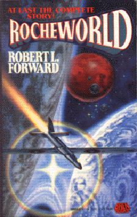

Rocheworldby Robert L. Forward
publisher: Baen Publishing
Fiction, 423 pages | 
(book cover art, Copyright ©1990 Robert L. Forward)
Used with Permission. |
Return to the Book MenuPrevious|Next
Description:
A small team of men and women take a long journey to one of the sun's
nearest neighbors, Barnard's Star. Once there they plan to investigate
the many planets in orbit, including one double-planet, called Rocheworld?
What mysteries will they discover? Will they find life?
Recommended for: Space buffs, SETI enthusiasts, and people who
enjoy a good adventure.
Note: If you are having difficulty visualizing what is going on, there
are some pictures at the end of the book. Be warned, however! This may
give away some of the plot.
Did-you-read questions:
Deadline: February 1, 2005.
These should be easy questions, but you should have the questions ready and keep an eye out during your reading. Each question should be answered with 1-2 sentences.
Note: these questions are not probably not the most important part of the book! Your essay will not have to cover these questions!
- Why does General Winthrop hate George Gudunov so much?
- What is the primary side effect of No-Die?
- What are the names of the two unmanned planes that are dispatched to the
other planets before Rocheworld?
- Who are Floating*Rock and Stiff*Movers?
- What becomes of Red's gold coin?
Report Questions:Deadline: Peer Review Session on February 8, 2005; paper due February 10, 2005.
You should write a 3 - 4 page essay on one of the following questions. Your essay should include examples and references to the book, unless otherwise specified. Page number references are sufficient for citing material from the primary book. If you use outside materials, cite your sources in full. If you would rather write on a different topic, you may, but clear it with Mr. Howe or Ms. Sullivan first.
- What do you think about the idea of a one-way voyage into space? Do you
think it is a good idea? Would you volunteer for such a trip? Give examples
from the book to justify your reasons.
- Do you think that these are realistic aliens? What about them seemed realistic
or unrealistic about them?
- Expand on the story to describe what it might be like to live on Rocheworld
in a human colony. How would it be different or similar to living on a
planet like Mars?
- Like many science fiction novels, this story supposes that mankind will invent, discover or engineer some new technologies. Choose examples of technology from the book that you think are the most likely to happen, the most revolutionary, the least likely to happen, and/or the most unusual and justify your reasoning. (You may make up your own categories also, if you like.)
Graphic and Presentation:
Deadline: February 21 - March 3, 2005.You will give a 10 minute presentation on both of the following:
- Convince your peers that they should (or should not) read this book. (This may include a brief summary of the book.) Give examples of what was cool or worthwhile in the book, and what you got out of it (or didn't).
- Describe a (realistic) science idea that you learned about in this book, citing information from at least 2 external sources (other than the dictionary). If you would like help choosing or understanding an idea from your book, you are invited to come talk to Mr. Howe or Ms. Sullivan.
Note: This presentation should not be just a reading of your paper!Along with this presentation, you should have a graphic that will go with it. A Power Point presentation is recommended, but if you have a special idea for a something else, such as a model, an original video presentation, or a well done drawing/ painting/ sculpture/ etc., you may do so, provided it involves a similar level of effort and polish. Speak to Mr. Howe or Ms. Sullivan first if you are considering an alternate graphic format to the Power Point.
Return to the Book MenuPrevious|Next